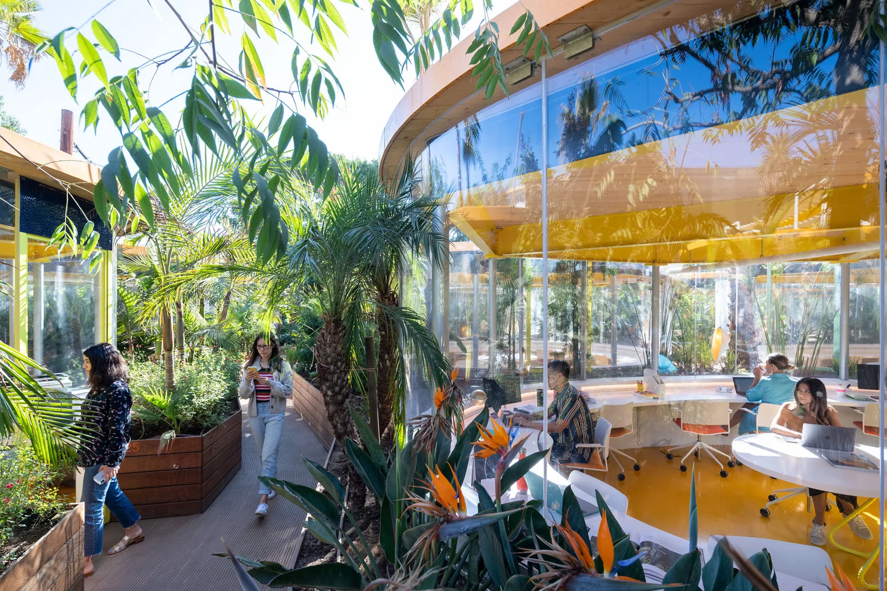
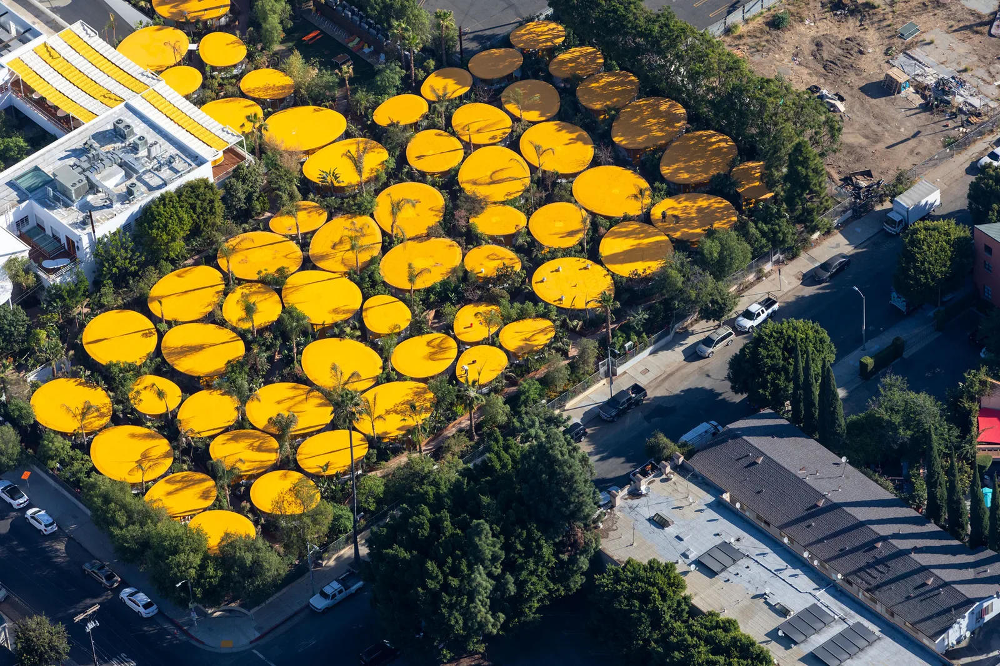
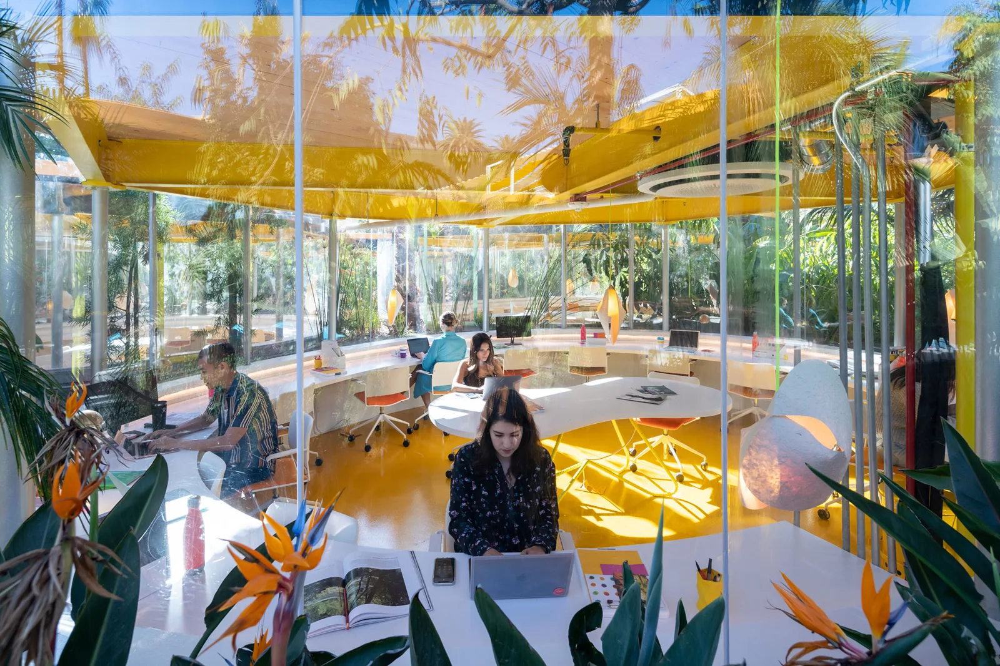
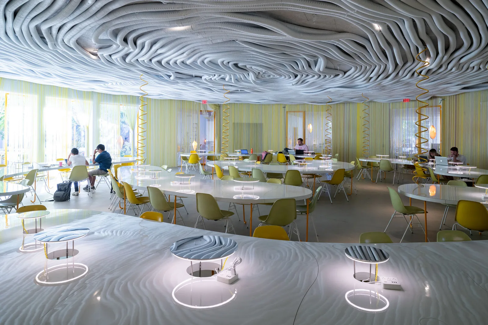
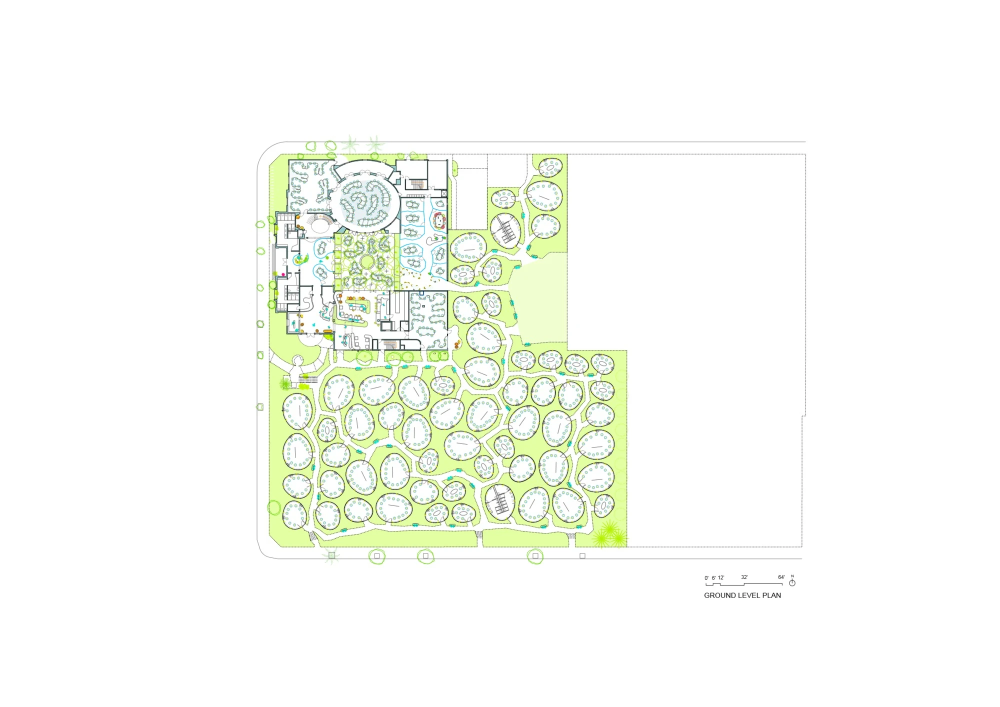
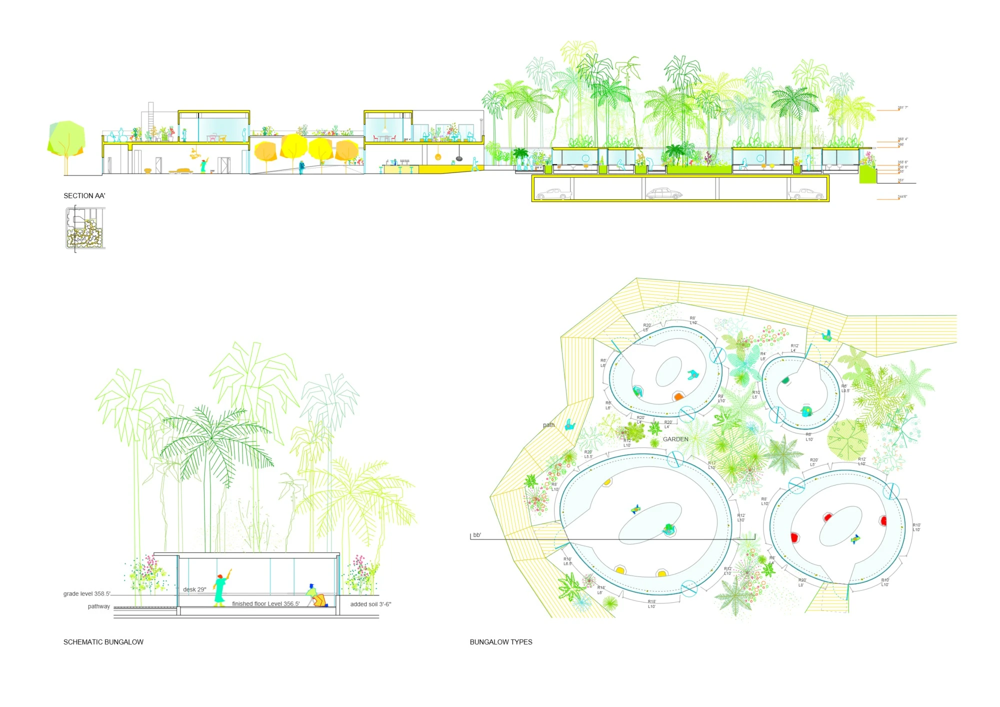

Shared offices · 2019
Second Home Hollywood Office
Selgascano
Los Angeles, California, USA
Separate office pods provide places for desk work and meetings, while a retained building contains shared workspaces, a café and an events hall. Garden paths connect quieter workplaces with the campus's collective activities.
The architects reversed the familiar idea of bringing plants into an office by placing offices within a garden. Curved transparent walls give views of planting at desk height; soil above the existing parking structure creates a landscape between the separate rooms.


Relevant connections
THINK
Individual offices and meeting rooms support focused work and discussion.
Images and drawings / 06









